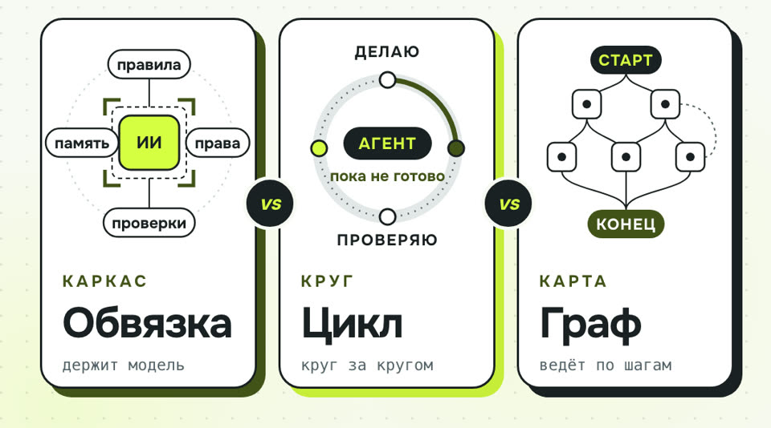

Обвязка, цикл и граф: разбор и шаблоны
Промпт был первым шагом. Агент, который реально работает, держится ещё на трёх слоях. Ниже каждый слой на примере Claude Code и нашего видеопайплайна и шаблоны, которые можно забрать к себе.
- бесплатно
- Claude Code
- шаблоны копируются кнопкой
- проверено на claude 2.1.310
К карусели «Обвязка vs Цикл vs Граф» · обновлено 27 октября 2026

Нужен Claude Code и папка проекта. Всё, что здесь настраивается, лежит в файлах проекта и удаляется вместе с ними. Синтаксис настроек меняется от версии к версии: мы проверяли на claude 2.1.310.
Какой слой чинить
- ОбвязкуАгент делает не то или лезет куда не надо. Чините правила, права, проверки. Шаг 2
- ЦиклБросает работу на полпути или крутится бесконечно. Чините цель, проверку после круга и потолок. Шаг 3
- ГрафПутает порядок шагов или делает необратимое без вас. Рисуйте шаги, переходы и точку, где нужен ваш «да». Шаг 4
Обычно все три слоя уже есть, просто собраны случайно. Задача в том, чтобы собрать их нарочно.
Первый результат за 4 шага
Попросите Claude Code собрать черновики
Запустите в Claude Code в папке проекта. Он сам прочитает код и предложит черновики, ничего не применяя без вас.
Помоги собрать три слоя агента для этого проекта. Ничего не применяй
без моего «да», сначала покажи черновики.
1. Обвязка. Прочитай проект и предложи AGENTS.md: что за проект,
как запускать тесты и линтер, что нельзя трогать, где что лежит.
Предложи .claude/settings.json с deny-правилами: правка тестов,
git push, секреты (.env и подобное). Для путей используй Edit(...),
не Write(...).
2. Цикл. Найди команду, которая проверяет, что работа готова (тесты,
сборка). Предложи Stop-хук: пока проверка красная — exit 2 и хвост
вывода в stderr, потолок 5 кругов, потом стоп.
3. Граф. Перечисли шаги, которые в этом проекте идут после правки кода
(сборка, деплой, публикация). Отметь, какие необратимы, и где должен
стоять мой «да».
В конце таблица: файл — что в нём — что ещё надо решить мне.Тот же промпт отдельным файлом: prompts/agent.md.
Черновики AGENTS.md, .claude/settings.json и Stop-хука, список шагов после правки кода и таблица «файл — что в нём — что ещё надо решить мне». Применяете только после своего «да». Сверить черновики можно с шаблонами из шагов 2–4.
Обвязка: что видит, что может, кто проверяет
Агент = модель + обвязка. Модель одна и та же у всех, разницу делает то, что вокруг неё.
В Claude Code обвязка — это три вещи:
- ВидитФайл правил проекта. Claude Code читает
CLAUDE.md; если правила уже лежат вAGENTS.md(его читают и другие агенты), вCLAUDE.mdдостаточно одной строки@AGENTS.md. Плюс папка с памятью и сами файлы проекта. - МожетПрава в
.claude/settings.json: что можно без спроса (allow) и что нельзя никогда (deny). Посмотреть текущие правила: команда/permissions. - ПроверяетХуки (команды, которые Claude Code запускает сам после правки или перед остановкой), тесты и человек, который говорит последнее «да».
Шаблон AGENTS.md
# AGENTS.md — правила проекта для ИИ-агента
## Что это за проект
[Одной-двумя фразами: что делает, для кого, на чём написан.]
## Как запускать и проверять
- Установка: [команда]
- Тесты: [команда, например npm test]
- Линтер: [команда]
Работа считается готовой, только когда тесты и линтер зелёные.
## Что нельзя
- Не правь тесты, чтобы они прошли. Чини код.
- Не пушь и не публикуй. Это делает человек.
- Не трогай [папки и файлы: секреты, миграции, чужие модули].
- Не ставь новые зависимости без вопроса.
## Как работать
- Сначала прочитай [ключевые файлы], потом меняй.
- Большую задачу разбей на шаги и после каждого прогоняй тесты.
- Если не уверен, спроси, а не угадывай.
## Где что лежит
- [папка] — [что в ней]
- [папка] — [что в ней]И CLAUDE.md рядом из одной строки, чтобы Claude Code подхватил тот же файл:
@AGENTS.mdШаблон deny-правил
Файл .claude/settings.json в корне проекта:
{
"permissions": {
"deny": [
"Edit(./tests/**)",
"Bash(git push:*)",
"Read(./.env)",
"Read(./secrets/**)"
]
}
}- Мы проверили своими прогонами: запрет
Edit(./tests/**)держится даже с флагом--dangerously-skip-permissions, иBash(git push:*)тоже. - Для путей пишите
Edit(...), а неWrite(...): правилоWrite(путь)в проверке файлов не участвует, CLI об этом предупреждает при запуске. Ошибка тихая, если не читать вывод. - Не проверяли и не обещаем: закрывает ли запрет на правку тестов правку через shell (
sed -iи подобное). Если это важно, закройте и такие команды.
Хук после каждой правки: линтер
Пример: после каждой правки файла запускать линтер. Вывод ошибок Claude Code увидит и поправит. В тот же .claude/settings.json:
{
"hooks": {
"PostToolUse": [
{
"matcher": "Edit|Write",
"hooks": [{ "type": "command", "command": "npm run lint --silent" }]
}
]
}
}В корне проекта лежат AGENTS.md, CLAUDE.md из одной строки и .claude/settings.json с запретами. Команда /permissions показывает ваши deny-правила.
Цикл: пока тесты не зелёные, но не вечно
Вместо промпта на каждый шаг: ясная цель, проверка после каждого круга и жёсткий стоп.
Круг выглядит так: смотрю, что упало → думаю, что поправить → правлю код → проверяю.
В Claude Code цикл собирается из Stop-хука. Он срабатывает, когда агент собирается закончить. Если хук выходит с кодом 2, агент не останавливается, а получает текст из stderr как причину и идёт на следующий круг. Код 0 отпускает. Мы проверили оба исхода на claude 2.1.310: и «починил и остановился», и «упёрся в потолок и остановился».
Шаблон: .claude/hooks/tests-green.sh
#!/usr/bin/env bash
# Stop-хук: агент не может закончить, пока тесты красные. Потолок кругов MAX_LAPS.
TEST_CMD="${TEST_CMD:-npm test}"
MAX_LAPS="${MAX_LAPS:-5}"
cd "${CLAUDE_PROJECT_DIR:-.}" || exit 0
session=$(sed -n 's/.*"session_id":"\([^"]*\)".*/\1/p')
counter="${TMPDIR:-/tmp}/claude-laps-${session:-x}"
laps=$(cat "$counter" 2>/dev/null || echo 0)
if out=$(bash -c "$TEST_CMD" 2>&1); then
rm -f "$counter"; exit 0 # зелёные: агент может остановиться
fi
laps=$((laps + 1)); echo "$laps" > "$counter"
if [ "$laps" -ge "$MAX_LAPS" ]; then
rm -f "$counter"; exit 0 # потолок: стоп, дальше смотрит человек
fi
{ echo "Тесты красные (круг $laps из $MAX_LAPS). Почини код, тесты не трогай. Хвост вывода:"
printf '%s\n' "$out" | tail -n 40; } >&2
exit 2 # exit 2 = «не останавливайся, вот почему»Сделайте файл исполняемым и подключите в .claude/settings.json:
chmod +x .claude/hooks/tests-green.sh{
"hooks": {
"Stop": [
{
"hooks": [{
"type": "command",
"command": "TEST_CMD='npm test' MAX_LAPS=5 \"$CLAUDE_PROJECT_DIR\"/.claude/hooks/tests-green.sh"
}]
}
]
}
}Три условия остановки, которые должны быть всегда:
- Цель. Всё зелёное — хук отпускает.
- Потолок. N кругов, потом стоп. Без потолка цикл может крутиться, пока не кончится лимит.
- Тесты не трогать. Иначе самый короткий путь к «зелёному» — переписать тест. Поэтому рядом стоит
deny: Edit(./tests/**)из шага 2.
Между кругами полезно: отдавать агенту хвост вывода тестов (это делает хук), коммитить после удачного круга и вести progress.md, что уже сделано. Тогда при обрыве сессии не придётся начинать с нуля.
Пока тесты красные, агент не заканчивает работу и получает хвост вывода. Зелёные тесты или пятый круг — агент останавливается.
Граф: шаги, стрелки и человек
Узлы делают работу, стрелки решают, что дальше.
Граф нужен, когда шагов много и порядок важен, а какие-то переходы нельзя отдавать модели. Промпт может попросить «покажи мне перед публикацией». Граф просто не пустит дальше без вашего «да».
Для такого графа не обязателен фреймворк. Хватает скрипта, где каждый шаг — отдельная команда, проверки стоят между шагами, а на необратимом шаге скрипт останавливается и ждёт человека. Фреймворки вроде LangGraph делают то же самое в коде и добавляют общее состояние и точки сохранения.
Шаблон: граф одним скриптом
#!/usr/bin/env bash
set -euo pipefail
step() { echo "▶ $1"; }
check() { "$@" || { echo "✕ проверка не прошла: $*"; exit 1; }; }
step "1. черновик"; ./steps/draft.sh
step "2. проверка"; check ./steps/check_draft.sh
step "3. сборка"; ./steps/build.sh
step "4. QA"; check ./steps/qa.sh
# 5. человек: необратимое только после «да»
read -r -p "Публикуем? Напишите да: " answer
[ "$answer" = "да" ] || { echo "Остановлено. Правки и заново."; exit 0; }
step "6. публикация"; ./steps/publish.shМодель можно вызывать внутри любого шага (например, claude -p "…"), но решение «что дальше» остаётся за скриптом.
Пример: наш видеопайплайн
- Сценарий — пишет модель.
- Озвучка — скрипт синтеза голоса, по дублю на реплику.
- ASR-проверка — распознавание речи сверяет, то ли сказано, что написано. Если нет, стрелка ведёт назад: переписать фразу и озвучить заново.
- Рендер — скрипт собирает ролик.
- QA-лист — автоматическая проверка готового файла и контактный лист кадров.
- Человек: «да»? — ролик ждёт. Зелёная техническая проверка не означает одобрения. «Нет» возвращает к сценарию с правками.
- Публикация — только после явного «да».
Скрипт идёт по шагам, падает на непрошедшей проверке и перед публикацией ждёт, пока вы напишете «да».
Если застряли
Запрет на путь не срабатывает
Для путей пишите Edit(...), а не Write(...): правило Write(путь) в проверке файлов не участвует. CLI предупреждает об этом при запуске, прочитайте его вывод. Текущие правила показывает /permissions.
Stop-хук не запускается
Проверьте, что файл исполняемый (chmod +x .claude/hooks/tests-green.sh) и что путь в .claude/settings.json совпадает с тем, где лежит файл.
Агент крутится и не останавливается
Нужен потолок кругов: в шаблоне это MAX_LAPS, по умолчанию 5. Без потолка цикл может крутиться, пока не кончится лимит.
Настройки ведут себя не как здесь
Синтаксис настроек меняется от версии к версии. Мы проверяли на claude 2.1.310. Сверяйтесь с выводом своего claude и командой /permissions.
Чего это не гарантирует
- Права в Claude Code ограничивают инструменты Claude Code. Если агент работает через другие программы или у него есть ваши ключи в окружении, это отдельные двери.
- Тесты проверяют только то, что в них написано. Зелёные тесты не значат «правильно», значат «не сломал то, что проверяется».
- Синтаксис настроек меняется от версии к версии. Сверяйтесь с выводом своего
claudeи командой/permissions.